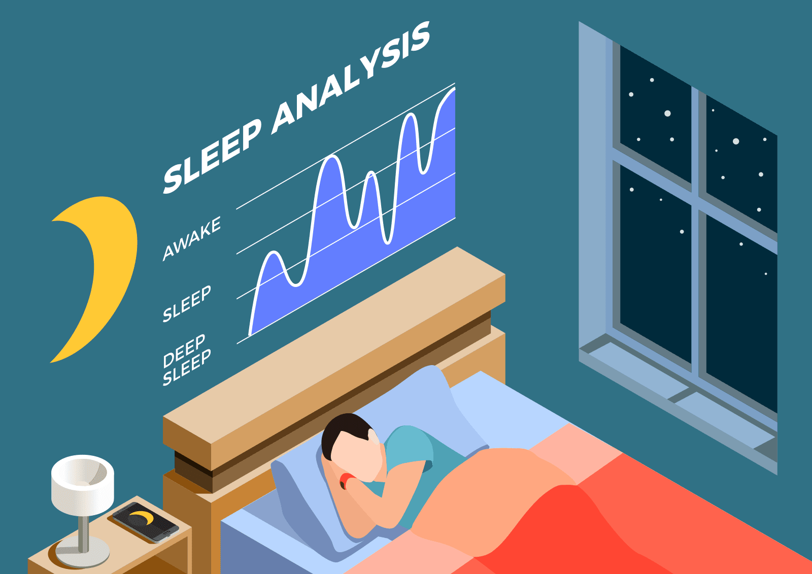

Real-time Monitoring
Track your vital signs continuously with medical-grade accuracy.
- 24/7 heart rate monitoring
- Blood pressure tracking
- Oxygen level measurement
- Temperature monitoring

AI Analytics
Get personalized health insights powered by advanced artificial intelligence.
- Pattern recognition
- Predictive health alerts
- Personalized recommendations
- Trend analysis
Emergency Alerts
Stay protected with instant emergency notifications and automatic response.
- Instant alert system
- Automatic emergency contacts
- Location sharing
- Medical history access

Sleep Analysis
Understand your sleep patterns with detailed analysis and recommendations.
- Sleep stage tracking
- Sleep quality scoring
- Sleep schedule optimization
- Sleep environment analysis
Activity Monitoring
Track your daily activities and exercise with precision.
- Step counting
- Workout detection
- Calorie tracking
- Activity goals
Stress Management
Monitor and manage your stress levels effectively.
- Stress level tracking
- Guided breathing exercises
- Meditation timer
- Stress reduction tips